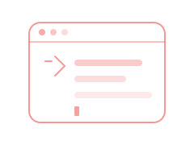
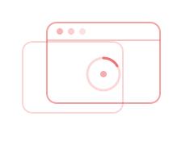
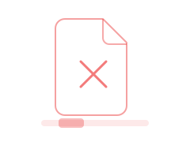
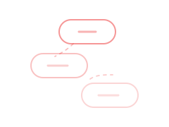
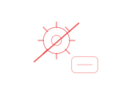

Best for video editors
Default H.264/AAC MP4 imports directly into Adobe Premiere Pro and After Effects. Extract WAV 24-bit audio, download SRT/VTT subtitles, or clip a specific section without grabbing the full file.
YT-DLP GUI is a free, open-source desktop app that wraps yt-dlp and ffmpeg in a premium interface — built for editors who need Premiere-ready files, not another sketchy web converter.
What are we downloading today?
Downloads H.264 MP4 format specifically for AE compatibility.
YT-DLP GUI is a free, MIT-licensed desktop application that wraps the yt-dlp downloader and ffmpeg in a graphical interface. It downloads YouTube and Instagram media locally on your computer — no command line, no web converter, and no account required.
Default H.264/AAC MP4 imports directly into Adobe Premiere Pro and After Effects. Extract WAV 24-bit audio, download SRT/VTT subtitles, or clip a specific section without grabbing the full file.
Web converters send your URL to a third-party server and often cap quality. YT-DLP GUI runs entirely on your machine with full yt-dlp quality control, editor-ready defaults, and zero ads.
The CLI offers maximum scripting flexibility. YT-DLP GUI adds a visual interface, auto-installs dependencies, Premiere-ready presets, a video clipper, Instagram tab, and recents history — without memorizing flags.
Last updated: · Version 1.7.0
If you've ever tried to grab media for editing, you've hit at least one of these walls.

You know yt-dlp is powerful. You don't want to memorize flags at 2am.

Random sites. Pop-ups. Quality caps. Your URL on someone else's server.

Downloaded a WebM. Premiere won't touch it. Project stalled.
You need 45 seconds for a reaction clip. You downloaded 47 minutes.

Captions live somewhere else. Another tool, another tab, another format.

yt-dlp updated. ffmpeg missing. Nothing works until you fix PATH.
YT-DLP GUI wraps the industry's most reliable downloader in a Shadcn-inspired interface — so content creators, video editors, and power users get high-quality, reliable media downloads without touching a command prompt.
Six dedicated workflows — each one maps to a tab in the app you already know how to use.
Default H.264 MP4 with AAC audio — the format Adobe Premiere Pro and After Effects expect. No transcoding step between download and timeline.
Pull the audio track without downloading the full video. Choose the format that fits your workflow — from portable MP3 to lossless WAV for sound editing.
Stop juggling separate tools for YouTube and Instagram. Paste a Reel or post URL and download as MP4 video or extract the audio as MP3.
Grab closed captions and standard subtitles in 13 languages. Export as VTT or SRT — ready for your editing software or translation workflow.
Preview the stream, set in and out markers, and download just that section. No more grabbing a 47-minute file when you need 45 seconds.
Drag the handles to set your clip
Import local videos or YouTube URLs, scrub the duration timeline, and divide clips using four local FFmpeg engines. No more manual transcoding command lines.
Locally slice and fingerprint any audio/video track, then search the AcoustID or ACRCloud databases to identify songs and track timestamps.
Thumbnail history with one-click folder reveal. Custom save paths, six accent themes, completion chimes, and auto-open on finish — all persisted locally.
Your past downloading activity.


Customize your download experience.
Whether you edit in Premiere, post to Instagram, or live in the terminal — YT-DLP GUI meets you where you are.
H.264 MP4 drops straight into Premiere Pro and After Effects. Clip only what you need. Pull lossless WAV for sound design. No codec roulette, no transcoding detour.
Download reference clips, save Reels for inspiration, and keep everything organized in Recents with thumbnails. Quality presets mean you never over-download.
Full terminal output visible while downloading. Concurrent download lockout prevents corruption. yt-dlp and ffmpeg auto-installed on first launch. Read the source — it's all there.
No black boxes. No accounts. No upload step. Your downloads run locally on your machine — and the code is yours to read, fork, and improve.
Use, modify, and distribute freely — for personal projects or commercial work. No subscription, no paywall, no ads.
Every line of the Electron app is public. Issues, pull requests, and forks welcome. Built on yt-dlp and ffmpeg — industry-standard tools, not proprietary backends.
Downloads never leave your machine. No cloud upload step. No account required. Your URLs stay on your desktop.
Built in the open with semantic versioning, a public changelog, and GitHub Actions for reproducible builds. You can verify every release.
Context isolation keeps Node.js out of the renderer. Only safe IPC methods are exposed.
Honest comparison across the three options most people try first.
| Capability | Web converters | yt-dlp CLI | YT-DLP GUI |
|---|---|---|---|
| Ease of use | Easy | Steep | Easy |
| Quality control | Limited | Full | Full |
| Premiere-ready defaults | Rare | Manual flags | Built-in |
| Video clipper | No | Flags required | Visual UI |
| Instagram support | Varies | Yes | Dedicated tab |
| Subtitle extraction | Rare | Yes | Dedicated tab |
| Privacy (local download) | URL sent to server | Local | Local |
| Cost | Free + ads | Free | Free (MIT) |
| Open source | No | Yes | Yes |
| Auto dependency setup | N/A | Manual | First-launch installer |
| Scripting / automation | No | Excellent | GUI-focused |
Every output format is pre-configured with a clear use case — so you never download a WebM when Premiere needs MP4.
| Format | Type | Use Case |
|---|---|---|
MP4 |
Video | H.264 / AAC — instant import in Adobe Premiere Pro and After Effects |
MKV |
Video | High-quality archiving with rich subtitle layers and multiple audio streams |
WebM |
Video | VP9/AV1 + Opus — high compression for web delivery |
MP3 |
Audio | 320kbps Level 0 VBR — maximum compatibility |
M4A |
Audio | AAC codec — efficient web-standard audio |
WAV |
Audio | 24-bit PCM uncompressed — studio-grade sound editing |
FLAC |
Audio | Lossless compressed — high fidelity, smaller file size |
Re-theme the entire app instantly — and try it right here. Same palettes available in Settings.
From install to finished file — no terminal, no dependency hunting.
Grab the Windows installer from GitHub Releases. On first launch, the app auto-downloads and configures yt-dlp and ffmpeg for you.
Choose your tab — video, audio, subtitles, clipper, or Instagram. Paste the URL, select quality and format, hit download.
Track progress in real time. Optionally auto-open the folder when done. Find it again anytime in Recents.
Electron with strict process separation — the same architecture pattern used by VS Code and Slack.
The renderer never gets direct Node.js access. Only whitelisted IPC methods pass through the preload bridge.
yt-dlp and ffmpeg run as local child processes. stdout streams back to the UI for real-time progress parsing.
Auto-installer supports Windows, macOS, and Linux using official GitHub and ffbinaries static builds.
Everything you need to know before your first download.
npm install && npm start.Free, open-source, and built for editors who care about quality. Download YT-DLP GUI and get your first Premiere-ready file in minutes.